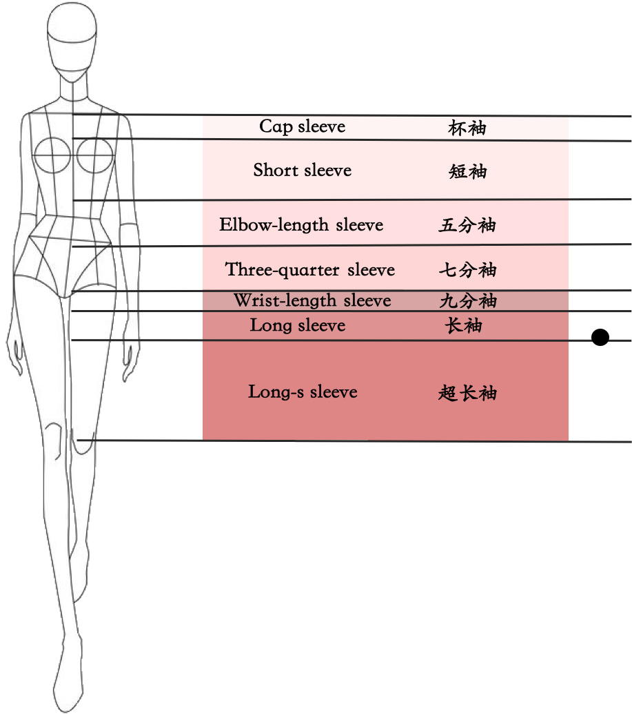
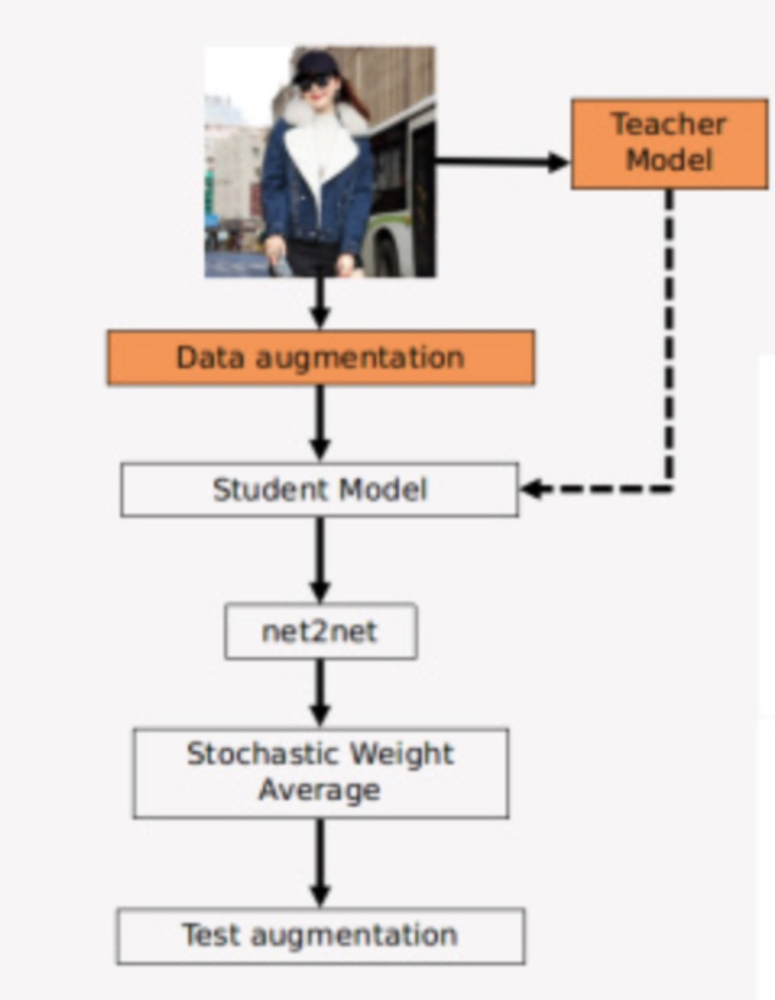

冠军方案之 FashionAI 服饰属性标签识别
freeopen 2021-02-11 [机器学习] #top1冠军：西安交大在读博士及硕士组成的“禾思众成”团队
任务说明
服装属性是时装领域的基础知识，它既庞大又复杂。 我们构建了一个层次结构的属性树作为结构化的分类目标，以描述服装的认知过程。 邀请您设计算法来识别服装图像的属性。 此任务可能会广泛应用于服装图片搜索，导航标签，混搭推荐等。

要求检测上图中所有可区分的服装属性标签。 统计下来，训练集的图片约18万张，8个大类（4个设计属性，包括各种领口的款式，4个长度属性，包括衣长、裙长、裤长、袖长），54个小类。
标签

a）上图的数据由训练有素的注释器标记。 然后，时尚专家会仔细检查这些标签，以确保较高的标签准确性。 带注释的数据中存在一定数量的缺失标签。 例如，图像中可能只有一个颈部设计标签，且颈部设计和袖子长度可见。 不再标记袖子长度以保持每个属性维度的数据均匀性。
b）为这条赛道选择了八个主要属性尺寸，即领口设计(Neckline)、领子设计(Collar)、高领设计(High Neck)、翻领设计(Lapel)、袖子长度(Sleeves length)、上衣长度(Length of top)、裙长(Length of skirt)和裤子长度(Length of trousers)。
数据特征
a）互斥：特定属性维度下的属性值是互斥的。例如，在高领设计尺寸中，高领和荷叶边半高领不能在同一图像中共存。必须注意一件事：考虑到挑战的严峻性，为了保证属性的相互排斥，我们放弃了一些特定的图像，在这些图像中，模型穿着多个重叠的服装，从而在一维中生成多个不同的属性。
b）独立性：不同维度下的属性值可以共存于单个图像中，并且彼此独立。例如，“脖子高领设计－龟颈”和“脖子领设计－衬衣领”可以共存于单个图像中。
c）在每个属性维度下，都有一个“不可见”值。这意味着在透视图中定义了特定的属性（顶视图，底视图或身体外观），但在特定图像中未出现或被遮挡。例如，给定一个穿着连衣裙的模特的图像，该图像包含两个透视图，即顶部外观和底部外观。裙子的下摆被遮挡，因此裙子的长度尺寸将被标记为“不可见”。该算法应考虑这种“否定”。但是，我们将不检查在相应透视图中未定义的属性的求反能力。例如，就像只有底部外观的裤子图像一样，我们将不检查其顶部外观的属性（例如“袖长”）。
注释文件的格式
ImageName：与“ Images”文件夹中特定图像文件相对应的图像名称。
AttrKey：属性尺寸，例如袖长（sleeve_length_labels），裤子长度（pant_length_labels）等。
AttrValues：与AttrKey中的属性维相对应的属性值。 例如，袖长尺寸有9个值：不可见，无袖，杯形袖，短袖，中长，3/4袖，腕长袖，长袖和超长袖子，分别对应于“ nnnnnnmyn” 上图中的注释。 批注总共包含九个数字，每个数字代表以下三个字母之一： y（表示“是”，“必须”），m（表示“可能”，“可能”）和n（表示“否”，“必须”） 对于给定图像中的每个属性维度，可以有一个且只有一个“ y”带注释的数字，其他数字可以为“ m”或“ n”。
模棱两可的边界的定义
上面的示例图中出现歧义。 特别地，套筒长度在“长袖”和“超长袖”之间，但是前者的重量略大于后者。 在这种情况下，“长袖”数字标注为“ y”，“超长袖”数字标注为“ m”，其余数字为“ n”。 这种歧义经常发生，在现实世界的服装属性注释中是不可避免的。
服装属性注释中的遮挡也是不可避免的。 对于裁剪了衣服的下摆的图像，很难准确预测衣服的长度。 在这种情况下，“不可见”数字应标记为“ y”，其他数字应标记为“ n”。 因此，“ skirt_length_labels” 被注释为“ ynnnnn”。
评价标准
计算所有属性维度的AP的均值以获得mAP，mAP用作服装属性识别数据集的最终排名得分。
另外，官方提出了BasicPrecision标准。当评估测试集的所有预测结果（ProbThreshold = 0）时，它是所有属性维度上的平均准确性。BasicPrecision是对准确性的更直接的估计，因此是合理的参考。通常，当BasicPrecision = 0.7时，排名得分（mAP）约为0.93。
模型设计
图片显示的服装分为两类，一类为模特图片，拥有两个或两个以上的属性，一类为服装平铺图，只有一个属性。属性也分为两类，一类长度属性，一类设计属性。对于长度属性，更关注整体风格和上下关联，对于设计属性，更关注细节区别。因此在模型设计上，须兼顾这些特点，思考如何挖掘无标签属性以及每个任务之间的关系。
数据增强
采用random crop， random flip，random erasing, random border，都是标准方法，不再赘述。参考其他团队的方法，还有种更好的方法是用目标检测模型找出模特和衣服，然后做数据增强效果会更好。因为这时的目标图片像素分布会比较均匀，减少了背景的干扰。
整体框架
整体框架采用半监督联合训练，先训练好的 teacher model 对一张图片的未标记属性进行预测，将预测结果作为soft label， 联合已知label对图片进行联合训练。这样， 一个模型被多个任务共同监督，这时任务之间的关联性能够被更好的发掘。
针对属性的差异性，和大多数参数团队一样，采用分任务训练，设计属性训练一个模型，长度属性训练一个模型，可参考第二名的方案，对长度属性的损失函数做专门设计，对预测与label相差距离更大的给更大权重，输出更大损失。第三名方案改进了长度属性的label, 一个1代表第一类，三个1代表第三类，六个1代表第六类，效果也有百分点的提升。
soft label 的技术，使用多个模型预测同一张图片，这些模型有Resnet、Inception、NAS 、DPN，即已经训练好的教师模型，每个教师模型专注于各自的任务类型，然后把预测出来的 label 加进学生网络，联合监督学生网络的训练。
Net2Net模型（将一个神经网络中的知识快速转移到另一个神经网络中），把原模型直接转成更高分辨率，兼顾感受野保同性和函数保同性，计算量远小于把图片分辨率提高所增加的计算量。
感受野保同性
降采样层增加后续卷积层的感受野，极大减少模型计算量，但是免不了会丢失一些信息。而dilated卷积不会丢失信息，因此用空洞卷积替换掉降采样层。 下面是换算公式，替换stage3和stage4的降采样层，在保持感受野增加的前提下，最后输出的分辨率提高了4倍。

优点：Net2Net 在不同计算能力的设备上转换模型，不需要重新训练。
函数保同性
基本原理为多出来的参数维度，随机拷贝原来参数的数据，再将多出来的数值求平均，来保证原始模型的知识保有。
Stochasitc Weight Average
将训练后的参数在参数空间之间平均，从而得到更鲁棒的模型，即不需要付出太多代价，就能得到一个融合的模型。
其他思路
- 把
模特图和平铺图分别训练 - 把
可见属性和不可见属性分别训练